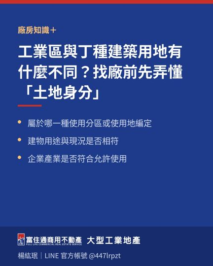
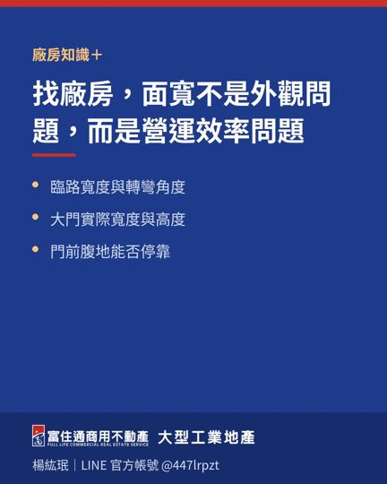
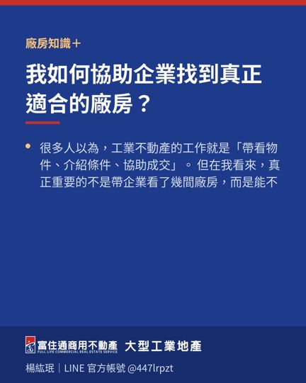
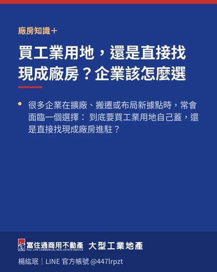

廠房知識
買廠房、租廠房、找工業用地之前，值得先知道的實務重點。每篇都是工業不動產現場常遇到的問題。
 看似便宜的廠房租金，背後往往藏著隱形成本2026-10-10
看似便宜的廠房租金，背後往往藏著隱形成本2026-10-10 貨櫃車「看起來進得去」還不夠，完整動線才是關鍵2026-08-09
貨櫃車「看起來進得去」還不夠，完整動線才是關鍵2026-08-09 企業準備擴廠，不要等空間不夠才開始找2026-08-06
企業準備擴廠，不要等空間不夠才開始找2026-08-06
工業區與丁種建築用地有什麼不同？找廠前先弄懂「土地身分」2026-08-05 合法廠房為什麼有價值？企業買的不只是空間，而是營運穩定性2026-08-04
合法廠房為什麼有價值？企業買的不只是空間，而是營運穩定性2026-08-04
找廠房，面寬不是外觀問題，而是營運效率問題2026-08-03
我如何協助企業找到真正適合的廠房？2026-08-02 高雄工業區發展趨勢：企業選址正在從「找空間」走向「找效率」2026-07-30
高雄工業區發展趨勢：企業選址正在從「找空間」走向「找效率」2026-07-30 找廠房時，企業最容易忽略的 5 個風險2026-07-29
找廠房時，企業最容易忽略的 5 個風險2026-07-29
買工業用地，還是直接找現成廠房？企業該怎麼選2026-07-28 找廠房，為什麼「挑高」常常比坪數更重要？2026-07-27岡山、橋頭、仁武怎麼選？不是比哪一區最好，而是看哪一區最適合企業2026-07-26有天車的廠房比較好？先看你的產業需不需要2026-07-23
找廠房，為什麼「挑高」常常比坪數更重要？2026-07-27岡山、橋頭、仁武怎麼選？不是比哪一區最好，而是看哪一區最適合企業2026-07-26有天車的廠房比較好？先看你的產業需不需要2026-07-23 物流業找廠房，腹地有時比建坪更重要2026-07-22
物流業找廠房，腹地有時比建坪更重要2026-07-22 租廠房不能只看租金，真正要算的是「進駐總成本」2026-07-21
租廠房不能只看租金，真正要算的是「進駐總成本」2026-07-21 帶看廠房，企業主最常問的 5 個問題2026-07-20
帶看廠房，企業主最常問的 5 個問題2026-07-20